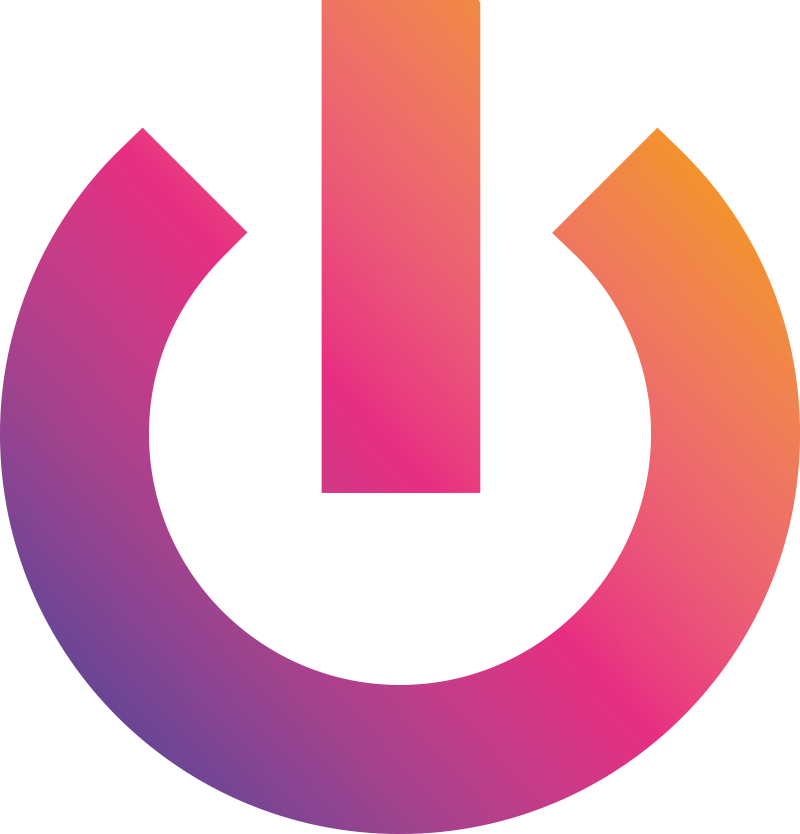

Systems
Building structured, dependable systems that reduce friction and support reliable operations.
Portfolio CV
Systems · Cybersecurity · Software
I work in security operations and software, with a focus on efficient systems, useful automation, and work that respects people’s time.
01 About
I work in the Security Operations Center, where I focus on incident response and day-to-day security operations. I also build automation with Azure Functions and Logic Apps to streamline recurring processes and remove unnecessary manual work.
I care about efficiency, practical value, and using technology in ways that save time for everyone involved.
02 Focus
Building structured, dependable systems that reduce friction and support reliable operations.
Working in security operations and incident response with a focus on clarity, speed, and resilience.
Building practical software and automation with Azure Functions and Logic Apps to save time and improve consistency.
03 Selected work
Mobile app for cat breeders combining cat management, litter tracking, and genetic phenotype calculation.
Private project
Dispatch platform for AbiTaxi designed to coordinate drivers clearly and efficiently.
Private project
04 Experience

05 Certifications
06 Contact
LinkedIn linkedin.com/in/luca-ramseyer
GitHub github.com/luca-ramseyer